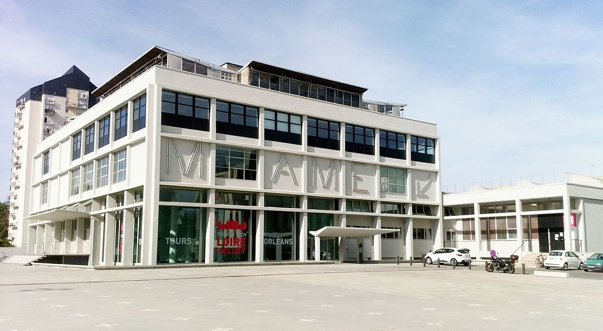

<div class="container">
  <h2 class="text-center">Où nous trouver ?</h2>
  <div class="row mt-3">

    <div class="col-12 col-lg-6 mt-3">
      <!--Debut map géolicalisant fanlab-->
      <div class="card">
        <div class="card-body text-center">
          <h4><strong>Map</strong></h4>
          <div class="map">
            <aol-map>
              <aol-control-zoom></aol-control-zoom>
              <aol-control-fullscreen></aol-control-fullscreen>
              <aol-interaction-default></aol-interaction-default>
              <aol-view [zoom]="zoom">
                <aol-coordinate [x]="x" [y]="y" [srid]="'EPSG:4326'"></aol-coordinate>
              </aol-view>
              <aol-layer-tile [opacity]="1">
                <aol-source-osm></aol-source-osm>
              </aol-layer-tile>
              <aol-layer-vector>
                <aol-source-cluster [distance]="60">
                  <aol-source-vector>
                    <aol-feature>
                      <aol-overlay>
                        <!--Coordonnées FanLab-->
                        <aol-coordinate [x]="0.6691059" [y]="47.3931929" [srid]="'EPSG:4326'"></aol-coordinate>
                        <aol-content>
                          <span class="logo_FanLab">
                            
                          </span>
                        </aol-content>
                      </aol-overlay>
                    </aol-feature>
                  </aol-source-vector>
                </aol-source-cluster>
              </aol-layer-vector>
              <aol-layer-vector>
                <aol-source-vector>
                  <aol-feature>
                    <aol-geometry-polygon>
                      <aol-collection-coordinates [coordinates]="[[1.47, 43.545],[1.51, 43.545],[1.51, 43.565], [1.47, 43.565]]"
                        [srid]="'EPSG:4326'">
                      </aol-collection-coordinates>
                    </aol-geometry-polygon>
                    <aol-style>
                      <aol-style-stroke [color]="'red'" [width]="2"></aol-style-stroke>
                      <aol-style-fill [color]="[255,0,0,0.1]"></aol-style-fill>
                    </aol-style>
                  </aol-feature>
                </aol-source-vector>
              </aol-layer-vector>
            </aol-map>
          </div>
        </div>
      </div>
      <!--Fin map-->
    </div>
    <!--Debut photo mame indicant l'entree vers funLab-->
    <div class="col-12 col-lg-6 mt-3">
      <div class="card">
        <div class="card-body text-center">
          <h4><strong>Photo de mame</strong></h4>
          <div class="pic_mame">
            
          </div>
        </div>
      </div>
    </div>
    <!--Fin-->

    <!--Debut plan de mame-->
    <div class="col-12 col-lg-6 mt-3">
      <div class="card">
        <div class="card-body text-center">
          <h4><strong>Plan de Mame</strong></h4>
          <div class="plan_mame">
            
          </div>
        </div>
      </div>
    </div>
    <!-- Fin plan-->
    
    <!--Debut plan locaux mame-->
    <div class="col-12 col-lg-6 mt-3">
      <div class="card">
        <div class="card-body text-center">
          <h4><strong>Plan FunLab</strong></h4>
          <div class="pic_mame">
            
          </div>
        </div>
      </div>
    </div>
    <!-- Fin plan-->
  </div>
</div>
